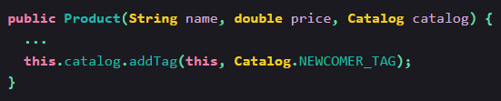

The Couplers
-
Feature Envy
Smell ini terjadi bila ada sebuah method yang lebih sering mengakses data class lain ketimbang class sendiri. Class sendiri pun menjadi ‘cemburu’. Bila hal ini terjadi, harus dipikirkan bagaimana cara mengusir method ini ke class lain tersebut.
Example Code :
Treatment :
Dilakukan Move Method pada fungsiisScored. Perhatikan di packageafter,isScoreddipindahkan ke classExam.
-
Inappropriate Intimacy
Smell ini terjadi karena hubungan antar class yang terlalu intim, menyebabkan class yang satu mengeksploitasi internal field dan/atau method di class lain.
Example Code :

Treatment :
Catalog dan Product punya hubungan bidirectional yang tidak perlu, maka dilakukan Change Bidirectional Association to Unidirectional. Dengan cara menghapus fieldcatalogdi dalamProduct.
-
Message Chains
Smell ini terjadi ketika ingin mengakses sebuah method, perlu dilakukan emanggilan dari hasil return method lainnya sehingga membentuk rantai:
obj.a().b().c().
Example Code :
Treatment :
Dilakukan Hide Delegate. Perhatikan class BojekDriver dan Destination, telah ditambahkan fungsilatitude()danlongitude()yang sebenarnya melakukan delegasi chaining yang dilakukan di package before. Hal ini dilakukan agar class client tidak merasakan adanya chaining, disembunyikan di dalam sini.
-
Middle Man
Middle Man adalah class yang isinya hanya delegasi saja, tidak ada behavior lain selain delegasi ke class lain.
Example Code :
Treatment :
Dengan menghapus classOrder, kita menghilangkan perantara dan menyederhanakan kode. Kita sekarang dapat menggunakan kelasOrderProcessorsecara langsung untuk memproses pesanan.